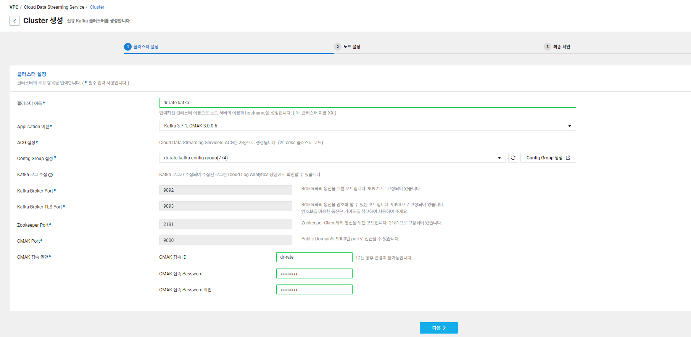
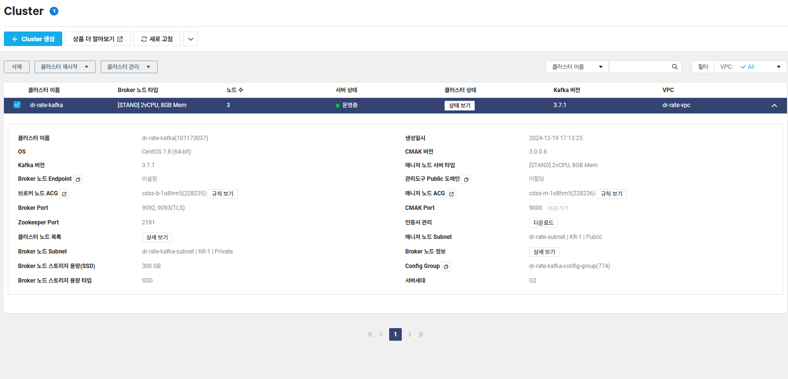
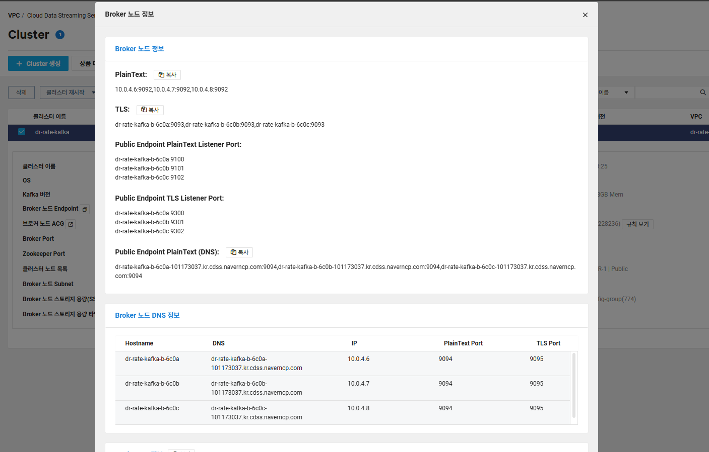
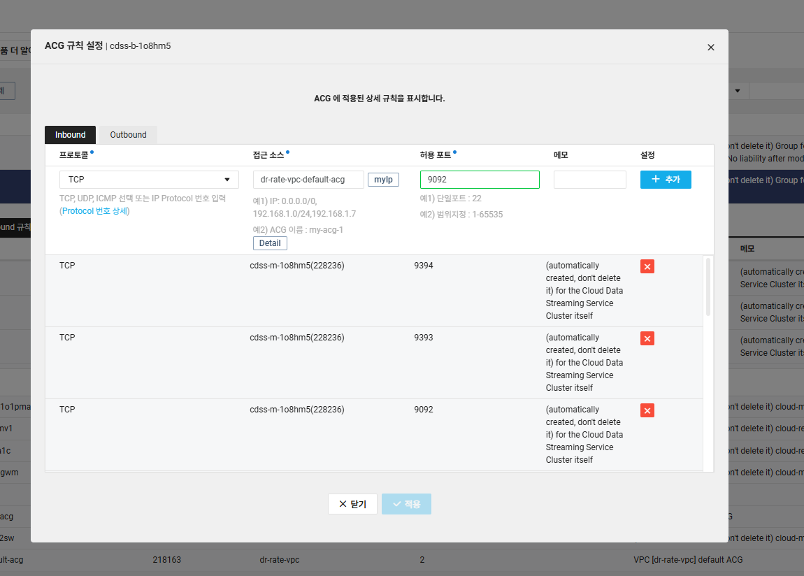

Kafka 생성

- CMAK 접속 ID : dr-rate
- CMAK 접속 Password : qwe123!@#
Kafka 환경 설정
- 클러스터 노드 목록을 확인해준다.


- application.yml에 Kafka
bootstrap-servers설정
kafka:
bootstrap-servers:
- dr-rate-kafka-b-6c0a-101173037.kr.cdss.naverncp.com:9094
- dr-rate-kafka-b-6c0b-101173037.kr.cdss.naverncp.com:9094
- dr-rate-kafka-b-6c0c-101173037.kr.cdss.naverncp.com:9094
consumer:
group-id: chat-group
auto-offset-reset: earliest
key-deserializer: org.apache.kafka.common.serialization.StringDeserializer
value-deserializer: org.apache.kafka.common.serialization.StringDeserializer
producer:
key-serializer: org.apache.kafka.common.serialization.StringSerializer
value-serializer: org.apache.kafka.common.serialization.StringSerializerACG 설정 (VPC 내에서 열어줌)

- 9094 포트 열어줘야 됨
Kafka Config 수정
// Kafka 토픽 생성에 필요한 설정을 추가
@Configuration
public class KafkaConfig {
@Value("${spring.kafka.bootstrap-servers[0]}")
private String node1; // 첫 번째 Kafka 서버 주소
@Value("${spring.kafka.bootstrap-servers[1]}")
private String node2; // 두 번째 Kafka 서버 주소
@Value("${spring.kafka.bootstrap-servers[2]}")
private String node3; // 세 번째 Kafka 서버 주소
@Bean
public KafkaAdmin kafkaAdmin() {
return new KafkaAdmin(Map.of(
"bootstrap.servers", String.join(",", node1, node2, node3) // 각 노드를 쉼표로 연결
));
}
@Bean
public AdminClient adminClient(KafkaAdmin kafkaAdmin) {
return AdminClient.create(kafkaAdmin.getConfigurationProperties());
}
}